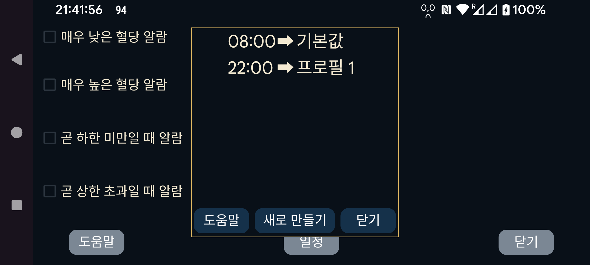
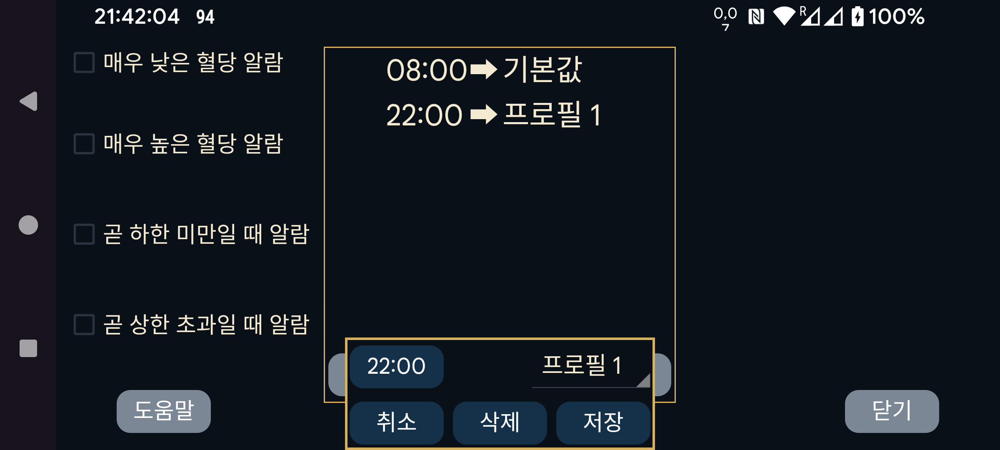

ar de es hi it ja ko nl ru uk uz en
특정 시각에 프로필이 활성화되도록 예약합니다. “새로 만들기”를 눌러 특정 시각과 프로필을 연결하십시오. Juggluco 는 매일 지정한 시각에 해당 프로필로 전환합니다. 시각-프로필 연결 항목을 눌러 편집할 수 있습니다.
알람과 말하기의 모든 설정은 공통 프로필별로 저장됩니다. 현재 활성 프로필은 왼쪽 메뉴→설정→ 알람 및 왼쪽 가운데 메뉴→ 말하기에서 확인할 수 있습니다. 처음에는 프로필이 “기본값”이며 “프로필 1” 또는 “프로필 2” 등으로 변경할 수 있습니다. 알람과 말하기에서 지정하는 내용은 현재 활성 프로필에만 적용됩니다.
일부 사용자는 프로필 전환 시작만 예약할 수 있고 종료는 예약할 수 없다고 생각했습니다. 하지만 기본 프로필로 다시 전환하는 항목을 하나 더 추가하면 종료 시간을 지정한 것과 같은 효과를 얻을 수 있습니다.